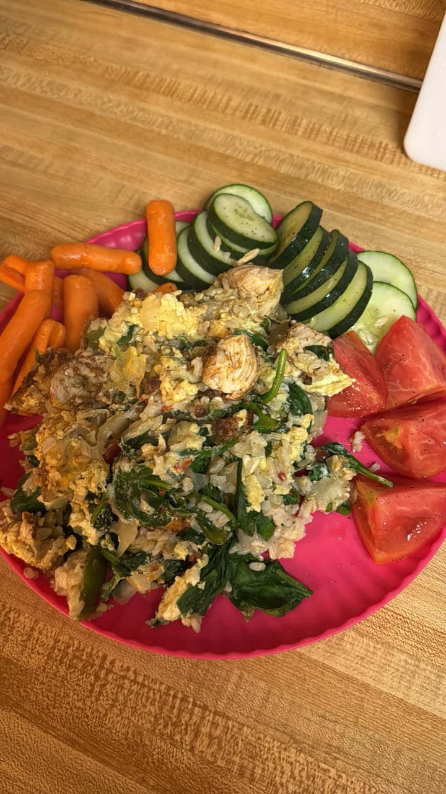

Chicken, Beans & Carrots
Prep: Season and sear chicken until golden. Warm black beans. Steam baby carrots. Optionally shred extra chicken with spinach and peppers.
Ingredients: Chicken · black beans · baby carrots · spinach · peppers · light seasoning